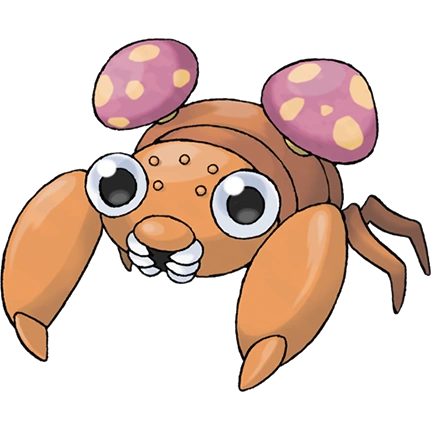

KANTO POKÉDEX
← 포켓몬 목록으로
#046

파라스
벌레
풀
버섯 포켓몬
특성
포자
건조피부
습기 (숨겨진 특성)
울음소리
포획률 & 성비
포획률
190 / 255
성비
♂ 50%
50% ♀
생태
파라스로부터 양분을 빨아들여 자란 버섯은 동충하초라고 불리고 있다. 장수(長壽)의 약이 되는 귀중한 버섯이다. 파라섹트로 진화한다.
← #045 라플레시아
#047 파라섹트 →